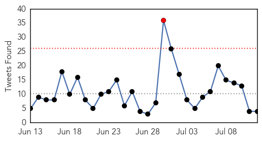
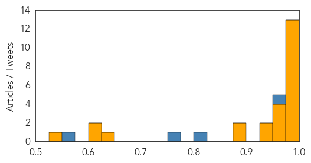
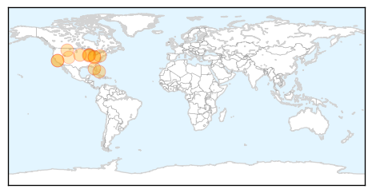

Ebola
30-Day Web Trend
1 alerts, 0 warnings

30-Day Twitter Trend
1 alerts, 0 warnings

Article Locations
Article Confidences
Top Articles:
- 1.000
- Mission Unaccomplished: Containing Ebola in Africa
- 0.999
- Liberia confirms five fresh cases of Ebola
- 0.999
- The most from the coast
- 0.999
- Death toll in Ebola outbreak rises to 121
- 0.998
- Guinea's president on global aid push: 'Ebola forced us to change completely'
- 0.998
- Steps taken to ensure Ebola-free Haj
- 0.995
- EU pledges a‚450mn
- 0.995
- African nations seek billions for Ebola
- 0.991
- United Nations urges continued solidarity to help the Ebola-affected countries
- 0.991
- Gates Foundation Gives $50m For Ebola
- 0.989
- Ebola Crisis: Africa Needs More Home-Trained Doctors
- 0.981
- Some $3.2 billion needed for Ebola recovery efforts
- 0.980
- Very few drugs, trial sites in search for Ebola cure: WHO
- 0.975
- Koroma arrives home from UN to more bad news of mismanagement
- 0.972
- Effort to put Ebola-affected West Africa on path to recovery
- 0.970
- “Get to Zero, Stay at Zero” – The Comprehensive Plan to End Ebola
- 0.965
- Tests show Ebola in Liberia linked to virus found months ago
- 0.948
- The Single Greatest Mistake You Can Make When Investing in Biotech
- 0.947
- Amount Of Pledges For Ebola Recovery In West Africa
- 0.891
- Pledges Of $3.4 Billion For Ebola Recovery Made At United Nations
- 0.878
- At United Nations, pledge of $3.4 billion was made for Ebola recovery
- 0.645
- EU pledges 450-m euros to Ebola-affected countries
- 0.604
- Writing about a fictional virus when you're a deskbound novelist
- 0.600
- Study finds donor funds fall short for key global health functions
- 0.534
- No plans to stop Liberia flights
Top Tweets:
- 0.994
- Genetic Tests Prove New Ebola Virus In Liberia Very Similar To First Outbreak - Tech Times http://t.co/NeNC34uzgM ebola EVD
- 0.952
- Genetic Tests Prove New Ebola Virus In Liberia Very Similar To First Outbreak ... - Tech Times http://t.co/6R3v7Ba9OA
- 0.946
- $3.4 Billion: Amount Of Pledges For Ebola Recovery In West Africa - Tech Times http://t.co/LAiWD0tMDb ebola EVD
- 0.880
- Liberians struggle to identify Ebola - Healio http://t.co/PimQnzuh9b ebola EVD
- 0.737
- Guinea's president on global aid push: 'Ebola forced us to change completely' - The Guardian http://t.co/ND6Pl5V8zL ebola EVD
- 0.630
- Effort to put Ebola-affected West Africa on path to recovery - http://t.co/EoprNmUUae (press release) http://t.co/aMaodHPjaX ebola EVD
West Nile Virus
30-Day Web Trend
3 alerts, 0 warnings

30-Day Twitter Trend
4 alerts, 0 warnings

Article Locations
Article Confidences

Top Articles:
- 0.992
- West Nile virus detected in Will County
- 0.990
- More cases of West Nile Virus have been detected in Illinois
- 0.965
- Watch Out For Mosquitoes This Summer
- 0.964
- This year, West Nile case has been first reported by Washington
- 0.937
- Mosquito test positive for West Nile in areas of Ohio
- 0.933
- Amid rainy summer, Ohio urges precautions against mosquitoes
- 0.927
- Montana's First Case Of The Year
- 0.923
- “The Courier ” Amid rainy summer, Ohio urges precautions against mosquitoes
- 0.910
- West Nile Virus On Rise In Bay Area, Present In Solano...
- 0.887
- Youngstown News, Amid rainy summer, Ohio urges caution with mosquitoes
- 0.871
- The Courier Amid rainy summer, Ohio urges precautions against mosquitoes
- 0.741
- Monsoons could bring more mosquitoes
- 0.598
- Health department provides tips to avoid West Nile
Top Tweets:
-
No tweets found for Jul 12, 2015